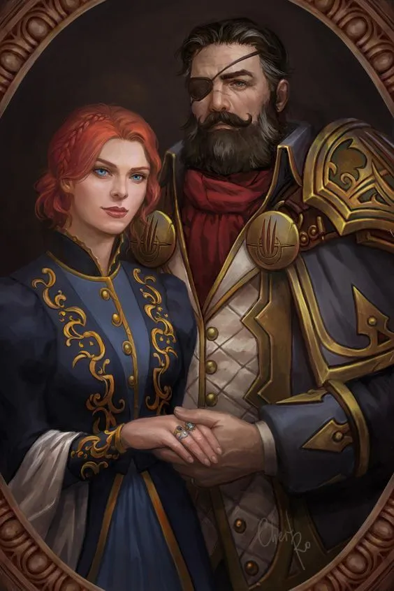
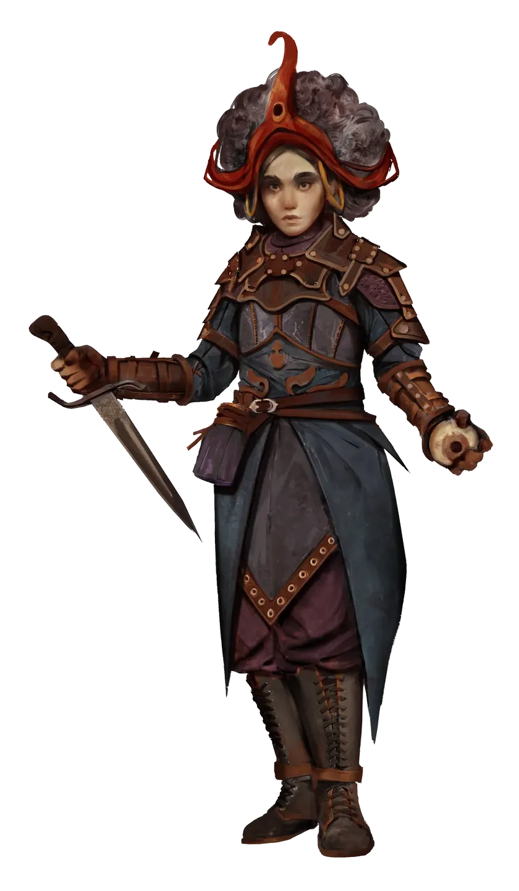

The start of a tale (Начало пути — знакомство и миссия дома Лебеды)
Знакомство персонажей в Рестове — стартовая точка кампании. Партия получает миссию: выполнить задание дома Лебеды, связанное с наследником Ландером, и передать письмо госпоже Саронне.
A night in the forest (Ночь в лесу — история Ландера, Алдона и Рог Ародена)
В Среброзале вскрывается след: кузнец Марек Богдан («Три Щипца»), учитель Ландера и боец стиля Алдори, пропал после посещения кузни. Пленный бандит признался, что Ландер у них, и дал координаты лагеря.
Destruction all around us (Разрушение вокруг нас — бой в замке и спасение уцелевших)
Ночной налёт синдиката «Чёрные Слёзы» на поместье Алдори: дракон и синяя великаша-предводительница разносят замок, в тени пожара действуют ассасины. Герои спасают: некромантку от огра; прислугу от дракона; Амири и Валери в подвале (за изувеченным великаном, меч Амири при нём); встречают Харрима в горящем западном крыле; спасают эльфийку-к
Джаманди распределяет задачи: героям достаётся Зелёный Пояс, первая база — торговый пост Олега. Предательство Тартуччио: он уводит за собой Амири, Харрима и Джейтал.
Looking for a path (В поисках пути — Дружина Беспределья и дерево гремлинов)
Последний выживший рассказал: чтобы вступить в банду Рогача, каждый кандидат должен собрать по 10 золотых и сдать офицеру, который прячется где-то на западе. По пути встретили кобольдов из племени Пепельная Чешуя.
Many paths, but no roads (Много троп, но ни одной дороги — алтарь Дезны и первый след Технолиги)
Одной ночью к героям пришёл беглец, который едва ушёл от «живодёров». Решив, что это бандиты, углубились дальше на юг — и наконец компас Каэлума показал, что его «друзья» рядом.
⚔️ПРОТИВНИККомандирша наёмников⚙️ПРОТИВНИКГлава отряда Технолиги⚔️Все враги · 2
ВСТРЕЧЕНЫ
⚔️
Командирша наёмников
Побеждена в бою и отпущена — но не переубеждена.
⚙️
Глава отряда Технолиги
Носит «странную» броню из металлов, которых здесь раньше не видели; понять, чем броня особенна, не удалось. Держит в плену андроида с татуировками.
Where did the road take us? (Куда завела дорога — портал, лагерь Технолиги, храм Эрастила)
Когда глава Технолиги исчезла в портале, героям удалось мельком заглянуть внутрь — на другой стороне был лагерь, где виднелась тяжёлая металлическая тренога. На следующий день отправились по следу, надеясь застать их врасплох.
⚔️ПРОТИВНИККалан

ПРОТИВНИКМедведь-аберрация⚔️Все враги · 2
ВСТРЕЧЕНЫ
⚔️
Калан
Взята в плен при штурме лагеря. Выдала немногое: лейтенант по прозвищу Трёхпалый, последний раз виденный в юго-восточной Нумерии у границы с Тигриными землями; вскользь —
Медведь-аберрация
Тело зверя искажено магией; отдельные его части обладают собственными способностями и могут быть отбиты. Бой начат, но в этой сессии не завершён.
One less trouble (Одной бедой меньше — Тацельвурмы, клыковица, подход к форту Рогача)
После событий в храме попытались убедить Тристиана вырезать татуировку у PR1ME-4, но он отказался — сказал, что для такой процедуры нужна полноценная клиника. В лесу наткнулись на зону магического прорыва плана земли — энергия искажала всё вокруг.
The Lord is Dead. Long live the Lord (Лорд мёртв, да здравствует лорд — Акирос, Потрошила, хартия)
Мужчина, переметнувшийся к героям во время боя с Рогачом, оказался бывшим жрецом Эрастила по имени Акирос. У вечернего костра Амири рассказала о своём прошлом.
ПРОТИВНИКПотрошила✦ТРОФЕЙРунка⚔️Все враги · 1
ВСТРЕЧЕНЫ
⚔️
Потрошила
От него бежали в прошлой сессии. На этот раз партия была готова лучше и смогла завалить опасное животное.
The noble party (Пир у благородных домов — Клод Орловский, столы, серпентарий)
Пошли на пир. Стразор пошёл к «своим» Орловским и Медведу, где его пожурили за разгильдяйство; потом познакомился с Гарресами, а под конец проведал серпентарий.
Week of deliberation (Неделя переговоров — обход благородных домов)
Два дня шастали по разным благородным домам и выслушивали предложения. По Miro (Negotiations Table, кадр подписан «из сессии 17, Week of deliberation») проработано 11 сделок.
Веха Kingdom Timeline: «Основание Оплота», Дезнус 4710 — основание столицы королевства (сопоставлено с названием сессии «The founding»). Возвращение во владения — беспорядок: зомби с кладбища мешают рабочим (Miro: «Зомби в столице», 24 Дезнуса).
Вехи Kingdom Timeline за Эрастус 4710, попадающие в таймскип: 2-й уровень королевства и основание Татцельфорда. Поход в пещеру кобольдов, истребление племени («первый геноцид»).
Гигантский мутировавший гриб глотает Кроу и Харрима и начинает переваривать заживо — их едва вытаскивают (Холмогорье, квест грибов Белдам). Расширение королевства: территория до рудника, дорога, пивоварня.
ВСТРЕЧЕНЫ👤Рыбак (визитёр)👤Аристократ (визитёр)👤Дама в плаще (визит…
Kingdom grows? (Терессия, палка Стразора, начало fae-арки)
Осмотр вещей пропавшего постояльца: волколак работал с Эйриком, использующим животных для боёв на арене. Визит к дриаде Терессии: отдала волшебные перья и раскрыла, что палка Стразора — часть феи (спрашивать в лесах).
New treasures? (Гробница келлидов + Джейтал + проклятая коса)
У входа в гробницу вождя келлидов партия встречает Джейтал — та направлялась туда же. Зачистка гробницы: полчища летучих мышей, ловушки с негативной энергией (Джейтал невосприимчива — доказала пользу команде), битва с нежитью.
Летний Шторм заступается за героев перед Таном и предлагает пари: дать ему время развлечь Тана через новичков — если удастся, Тан вернёт героев домой такими, как были; если нет, имя и свобода кролика достаются Тану. Летний Шторм излагает план: пока он тайно готовит побег (вкладывает свою магию в лист-приглашение), героям нужно развлекать
Каэлум использует Ventriloquist Ring: поворачивает кольцо и громко кричит «бегите!» — голос проецируется на 60 футов к рандомной фее в толпе. Погоня-chase (P2e групповая механика): партия прорывается через толпу фей и элитную растительную стражу.
Элитная растительная стража у выхода из пира — герои дрались с ними ещё в S24 и знали, что их сложно одолеть. В побеге пришлось потратить заготовленное «очко подготовки»,
Гончие Тана (столовые псы) ×4
Когда Тан заметил побег, он превратил пиршественные столы в гончих псов («маленькие объедки со стола») и натравил их на партию.
⚔️
Слизни болотистого гекса
Случайный энкаунтер по пути из болотистого гекса. Слизь делится пополам при ударе режущим оружием (Кроу разрубил косой — стало два), неуязвима к критам и колющему (пуля р
No rest for the kings! (Тролльи псы, дварфийская шахта, мёртвый единорог)
Кроу рассказывает партии, что к нему как-то вечером в столице приходила Джейтал. Партию привлекает вонь и зловещая тишина от поляны с гнилым 'болотом'.
Псы с регенерацией (огонь отключает её на раунд, до конца следующего хода). Магически собирают тело обратно после падения, поднимаются одним действием.
⚔️
Элонакс ×2 💀
Феи-большие-кошки, выглядят как рыси (DM спорил с игроками: в статблоке 'рысь', но по картинке — 'барсик'). Растворяются в облако жара и дыма (concealment + persistent fi
💀
Орда дварфийской нежити
Большая группа мёртвых дварфов в нижнем ярусе шахты, безучастно продолжает копать руду и складывать её в вагонетки. По P2e правилам — 'Орда': куча нежити, группирующаяся
⚔️
Аурос Рача 💀
Босс-нежить нижнего яруса шахты — размером больше великана ('магия нежити'), у него буквально из желудка вываливается золото и драгоценности.
⚔️
Frighmoth / Фрагемот
Гигантское жабоподобное существо-аберрация в Крючковатых Топях. Партия застала сцену: Frighmoth языком хватает и пережёвывает болотных воинов-жуков (из шести уже съел дву
Half a year passed (Управление королевством и дипломатические стратегии)
Полный ход королевства — достигнут 3-й уровень, столица разблокировала статус ГОРОДА. Партия (Стразор, Каэлум, Кроу + Нок-Нок, Тристиан) отправляется на восток исследовать «Камляндию».
Случайный энкаунтер у руин ирригационной системы. Первая виверна критически провалилась в самом начале боя (условно «уронила» приманку-сокровище, которое пролетело мимо С
Allies or enemies? (Дипломатия в Кобольтских землях и засада в лесу)
Продолжение клиффхэнгера S27: партия даёт Харгулке ответ прямо в пещере кобольдов — кобольды остаются кобольдами, Светоч предлагает лишь взаимопомощь без подавления культуры. Полный ход королевства Светоч (приближается 4-й уровень).
ПРОТИВНИКТролль-псы (вторая встреча)🐺ПРОТИВНИКВарги с невидимыми пикси-наездниками🧌ПРОТИВНИКТри тролля (преследователи рейнджера)🧿ТРОФЕЙДва талисмана (докуплены в групповой сундук)⚔️Все враги · 3
ВСТРЕЧЕНЫ
Тролль-псы (вторая встреча)
Те же тролль-псы, что и в прошлой сессии — «размножаются, как кролики». В юго-западных Нарлмаршах подкрадываются хрюкая и выбегают навстречу при исследовании.
🐺
Варги с невидимыми пикси-наездниками ×2
ДРУГИЕ варги (не восточное племя Быстрой Войи) в юго-западных Нарлмаршах. Подходят подозрительно бесшумно; попытка Стразора «мы знакомы с варгами на востоке» игнорируется
🧌
Три тролля (преследователи рейнджера) ×3
Три тролля идут по кровавому следу за раненым рейнджером, ломая деревья, с юга. Один из них выделен визуально — носит большие потрёпанные, но красивые НАРУЧИ ИЗ СИНЕЙ КОЖ
Пёс лаем привёл партию к раненому следопыту после боя с троллями (Стразор: даже засада была бы «ещё лучше», но ловушки нет). На трупах троллей: наручи из виверновой чешуи (трофей), Hunter's Bane (взял Каэлум), Cold Iron Kukri и +1 Light Hammer.
ПРОТИВНИКВарги с невидимыми пикси-наездникамиПРОТИВНИКТролли-разбойники Граглберта🧌ПРОТИВНИКСтая троллей-псов✦ТРОФЕЙНаручи из виверновой чешуи⚔️Все враги · 7
ВСТРЕЧЕНЫ
🐺
Варги с невидимыми пикси-наездниками
В самом начале похода (из recap-нарратива) партия налетела на варгов и обнаружила, что это «ни хрена не просто варги, а на них были наездники — невидимые пикси».
Тролли-разбойники Граглберта ×3
Обычные дикие тролли, последователи Граглберта; один носил наручи из виверновой чешуи (знак ранга). Партия впервые дерётся с дикими троллями.
🧌
Стая троллей-псов ×5
Стая из пяти троллей-псов нападает на партию в лесу (уже встречались раньше). У каждого регенерация — оживают, если не добить правильно; лечатся при укусе.
⚔️
Квиклинг
Маленькая злая фея размером примерно с Линзи, жила в юго-восточной башне разрушенной эльфийской крепости — на стенах прибиты окровавленные скальпы, его трофеи.
⚔️
phantasmagoric cloud poison
⚔️
Свормы крыс (северо-восточная башня) ×3
Три сворма голодных крыс в северо-восточной башне эльфийской крепости (крыша обрушилась, лианы вместо потолка, среди обломков — обглоданные кости и мусор).
⚔️
Тенеброд
Смертоносная фея, прячется в лианах на высоте ~20 футов в единственной уцелевшей (северо-западной) башне; партия выбила запертую изнутри дверь и потревожила его.
Партия поднимается на вершину первой башни и застаёт эльфийского вида даму с окровавленными руками среди цветов. Стразор, единственный не под чарами, через Recall Knowledge понимает: перед ним фея, но необычная — редкое «семя нежити Первого Мира», ставшее на путь нежити при жизни.
Эльфийского вида дама с окровавленными руками, среди цветов на вершине первой башни. По Recall Knowledge Стразора — редкое существо: «семя нежити Первого Мира», фея, став
🌿
Травяной/лиственный леший с лианами 💀
Второй противник — во время боя с Баобан Сид лезет по стене (сначала одна зелёная голова из окна с севера, потом входит в комнату).
У разбитых гнилых ящиков на причале из засады нападает Ходак-шамблер: обвивает ногу и захватывает Кроу лианами в restraint (Кроу проваливает Escape, тратит Hero Point), лианы бьют критами Клыка, Валери и Линзи. Партия идёт через крапиву, бурьян и туман к древней разрушенной башне (зубчатый цилиндр 40 футов, некогда 80).
Хитрое плотоядное растение, «ходячая куча лиан», обычно охотится в одиночку из засады. Ждал партию у полуразрушенного причала среди разбитых гнилых ящиков.
⚔️
Виловисп (одинокий блуждающий огонёк) 💀
Невидимый (hidden) блуждающий огонёк у руин башни. Бил вспышками электричества из невидимости — крит по Кроу «плюс восемь».
⚙️
Анимированная статуя Йог-Сатота (страж сфер)
Абстрактная каменная статуя более чем из десятка полых сфер с горящим внутри пламенем, на постаменте с надписью акла «Йокса тот знает врата».
⚔️
Тень-прайм (Shadow Prime) 💀
Главная тень в зале арок и скипетра. Инкорпоральная нежить: резист 5 всему урону, кроме vitality (positive) и force; против немагических атак резистанс удваивается.
⚔️
Тени-копии PC (Shadow Doubles) ×2
Тени, порождённые Shadow Prime из украденных теней Кроу и Валери. Атакуют строго своих оригиналов («у него одна цель — уничтожить настоящего Кроу»).
Спуск по лестнице в прямоугольный зал: чёрные пол и стены, «застывшие тени» вдоль стен, у южной стены — озеро чёрной смолы. После боя: из тушки бормотуна торчит Кровавая Кукри «Жажда» (для Нок-Нока).
ПРОТИВНИКМногородный бормотун (1)⚔️ПРОТИВНИКМногородный бормотун (2)⚔️ПРОТИВНИКВолль-висп, выдающий себя за предка ящеров✦ТРОФЕЙЖезл Усиков Гнили (Grim Tendril)⚔️Все враги · 4
ВСТРЕЧЕНЫ
⚔️
Многородный бормотун (1) 💀
Аморфное чёрное существо изо ртов и жижи, поднявшееся из чёрной смолы у южной стены нижнего зала подземелья. Плюётся кислотой (попала в глаза Валери — dazzled), кусает и
⚔️
Многородный бормотун (2)
Второй многородный бормотун в том же бою в нижнем зале. Добит Каэлумом в погоне (стрела; ранее по нему бил Force Barrage Стразора).
⚔️
Волль-висп, выдающий себя за предка ящеров 💀
Невидимый волль-висп, который через ритуал троллихи-шамана Харгулки проявлялся в племени ящеров как «дух предка». Сперва — летящий череп ящера (Recall Knowledge: НЕ магич
⚔️
Хищники-мимики (зовущие голосами) ×3
Трое хищных существ, похожих на гиен (Линзи: «выглядят чуть-чуть пострашнее гиен... кто-то скрестил гиену, бурундука и лань»), кричали голосами людей на толдорском (talis
Допрос сдавшегося мимика-гиены. Полный ход королевства — достигнут 4-й уровень (1205 опыта).
ПРОТИВНИКГрязевые элементали (грязевики)⚔️ПРОТИВНИКПлезиозавр озера Серебристый След✦ТРОФЕЙПлатиновый идол в форме ухмыляющегося черепа⚔️Все враги · 2
ВСТРЕЧЕНЫ
⚔️
Грязевые элементали (грязевики) ×4
Группа из ~4-5 разумных, но низкоинтеллектных грязевых элементалей, живущих на пузырящихся горячих илистых отмелях северо-восточного берега Серебристого Следа.
⚔️
Плезиозавр озера Серебристый След
Огромное (минимум Huge) подводное существо в озере Серебристый След, питается дорогими серебряными уграми. Сначала партия увидела издалека только его голову — высовываетс
Огненный дрейк на Когте: туч, волков и подложный дракон
На середине подъёма по Когтю — звук дождя на безоблачном небе. Кобольды приводят партию к огромной крылатой твари.
ПРОТИВНИКПринц волков⚔️ПРОТИВНИКГрозовые тучи (живые торнадо)⚔️ПРОТИВНИКОгненный дрейк на горе Коготь✦ТРОФЕЙПалочка Драконьего Дыхания (Wand of Dragon …⚔️Все враги · 3
ВСТРЕЧЕНЫ
🐺
Принц волков
Лидер небольшой стаи страшных волков, преследовавшей партию на пути к Когтю через земли варгов. После серии Survival-стычек-истощения партия попала в финальный энкаунтер:
⚔️
Грозовые тучи (живые торнадо) ×4
Стразор Recall Knowledge сначала опознал обычных элементалей воздуха (нет уязвимостей к оружию — бить можно любым), а позже, увидев уровень урона и их поведение, понял: э
⚔️
Огненный дрейк на горе Коготь
Огромная крылатая ящерица с помятыми крыльями, выдававшая себя за дракона перед группой кобольдов. Каэлум Recall Knowledge'ом (natural 20) опознал: это не дракон, а дрейк
Бой у ворот поста Олега с культистами Нарглума: лидер-гоблин выдвигает ультиматум сдаться 'во имя великого Нарглума Трёхглазого', с ним друид, несколько гоблинов с фласками алхимического огня и боевые псы. Бой с тремя крылатыми гоблинскими псами в комнате-ловушке.
Возглавлял гоблинов, долбивших ворота поста Олега. Выдвинул ультиматум: бросить оружие и стать заключёнными, иначе 'убьём вас во имя великого Нарглума Трёхглазого'.
Гоблин-культист, присягнувший Нок-Ноку
Единственный выживший из штурмовой группы — Каэлум оставил его без сознания нелетальным уроном для допроса. Выдал расположение логова: 'под водопадами, на восток'.
🕯️
Крылатые гоблинские псы Ламашту ×3
Три пса, выпущенные из боковых камер после срабатывания ловушки. Нок-Нок в шоке: 'Крылатые гоблинские псы!
👺
Нарглум Трёхглазый
Трёхглазый баргест. Год назад терроризировал деревню Перехода Невадки (через которую партия проходила, покидая Бревой) под именем Нарглу и был убит группой приключенцев;
👺
Багбиры-телохранители Нарглума ×3
Несколько багбиров вокруг трона Нарглума. По знаниям Каэлума — 'разновидность гоблиноидов, довольно злые, любят атаковать людей, мучить их и творить всякие ужасы', но 'сл
⚔️
Красношапка (Redcap) №1
Жестокая фея-садист. В комнате за тронным залом — кровавые фрески 'невысоких бородатых людей в больших ботинках и красных остроконечных шляпах, которые с помощью больших
⚔️
Красношапка (Redcap) №2
Вторая красношапка. От фаербола Стразора уклонилась, прикрывшись телом первой.
Вечером 26-го Бала уходит в ближайший лес с вином, ищет грибной круг и проводит оккультный ритуал связи со своей «старшей» — феей детства из Семи Арок. 27-е, площадь.
ПРОТИВНИКГригорий⚔️ПРОТИВНИКДрак-ящер в южном логове✦ТРОФЕЙКопьё Стасяна (магическое, +1 striking)⚔️Все враги · 2
ВСТРЕЧЕНЫ
Григорий
Высокоранговый бард родом из Гальта (утверждает, что покинул страну, не одобряя творящегося там). Прибыл в Светоч расшатать молодое нестабильное королевство.
⚔️
Драк-ящер в южном логове
Огромный четырёхногий ящер-дракон, живший в глубокой пещере посреди замшелой «миниатюрной горы» к югу от Светоча. Крупные следы, которые он «каким-то образом скрывает» (S
👤«Старшая» Балы (фея…Неприметный вербовщ…👤Друиды Семи Арок
Стая обычных варгов под предводительством ледяного вожака. Тактика стаи (Pack Reaction, НЕ обычные атаки по возможности): когда PC атакует одного варга, соседние варги мо
Лорд Харгулка
Лично в S38 не появляется, но остаётся конечной целью южной кампании. Именно к его клетке шла разбитая армия Светоча; тролльи и варг-армии — часть его сети.
🐺
Ледяной вожак варгов
Огромный варг, отличный от собратьев: когда он дышит, дыхание будто наполнено кристалликами льда и инеем. Двигается с молниеносной скоростью — после Стразорского фаербола
Бой с огненными элементалями у ядра-портала. В южной комнате-кабинете из стен выскакивают дерновые псы плана Земли (DM несколько раз переигрывал их появление).
Группа огненных элементалей, охраняющая ядро-генератор портала в план огня. Часть маленькие и крылатые, один крупнее прочих.
⚔️
Дерновые псы
Существа с плана Земли в форме крупных псов, на шкуре растёт трава/дёрн. Выбегают прямо из стен и пола (DM забыл, что они выходят последовательно, и переигрывал).
⚔️
Ледяной элементаль воды
Охранял северную (водную) комнату-кабинет. По Recall Knowledge: 'существо, рождённое холодом, в постоянном цикле замерзания и таяния', слабо к огню.
Королевский ход, могила тигриного владыки и первая армейская победа
Полный королевский ход за конец месяца Эрастус (закрывают прошлый + новый, чтобы дождаться Валю). Каэлум (Address внутренних дел, крит-успех) отправляет шпионов узнать планы Харгулки.
ПРОТИВНИКАрмия троллей (южная)💍ТРОФЕЙОтпечаток тигриного кольца (на мыле)⚔️Все враги · 1
ВСТРЕЧЕНЫ
🧌
Армия троллей (южная)
Тяжелейший армейский противник по правилам P2e Armies: регенерация + тактика 'чем больше у них урона, тем ожесточённее они дерутся' (усиливаются от ран).
Первый враг у входных дверей. Когда партия наваливается на двери, он мог бы обстрелять их, но из-за невидимости бросает арбалет, выхватывает короткий меч и кричит: "Во им
Тролли-стражи крепости ×3
Стражи-тролли обоих боёв. Огромные выносливые тела: по знаниям Стразора (Recall Knowledge, Lore Troll) сильнейший спас — Фортитьюд, самый слабый — рефлекс.
🦅
Гарпии крепости ×2
Две гарпии ВНЕЗАПНО прилетают сверху, с обрыва, на звук боя у входа (партия их сначала не видела). Первая пробует зачаровать всех песней (Captivating Song, спас Воли) — В
👺
Хобгоблины-лучники (снайперы)
Меткие стрелки на бойницах и балконах тронного зала. Уникальный навык "двойной выстрел" за ОДНО действие (DM несколько раз просил не путать с обычным двойным выстрелом) и
Боевые псы Харгулки
Свора боевых псов из псарни. Хобгоблин выпускает их во втором бою — целая стая бежит к партии.
⚔️
Хант храма Торага
Активный хант в северном храмовом зале. Когда Харрим сплёвывает на символику Торага (а Бала вдобавок оскорбляет: "символика творога?"), давящая сила прижимает всех к полу
Лорд Харгулка
ВПЕРВЫЕ УВИДЕН ЛИЧНО (упоминался с S27). В тронном зале стоит на вершине массивной каменной лестницы у каменного трона.
Лорд ХаргулкаБоевые псы Харгулки👤Хант храма Торага👤ТорагСын Харгулки (упомя…
Кровь на нижнем этаже: засада троллей, месть Экундайо и тронный зал Харгулки
Партия решает отступать. В мясной пещере партия застаёт конец переговоров скрэга и великана клана Граглберта (один бьёт другого по голове), после чего те нападают.
Трое лучников, сбежавших недобитыми в конце S41; в начале S42 партия их добивала. Тактика — отходить к подкреплению: один стрелял в спину Кроу, потом поднялся по винтовой
Скрэг (особый тролль)
В мясной пещере заканчивал переговоры с великаном Граглберта. Стразор провалил Recall Knowledge: «это тоже какая-то разновидность троллей, но тебе непонятно какая.
Великан клана Граглберта
В мясной пещере вёл переговоры со скрэгом — закончили тем, что один ударил другого по голове, потом заметили партию и напали.
Лорд Харгулка
Открытый враг с S28, вождь крепости. В S41 бросил пару ласковых и сбежал; в S42 партия наконец выбила двери его тронного зала (украшены клыками и рогами как боевые трофеи
Королева Харгулки (жрица-заклинательница)
Впервые появилась в тронном зале рядом с Харгулкой во время штурма. Произносит заклинания «на каком-то вообще ужасном языке» — уши режет, слова «как будто извращённые, не
Этин (двухголовый тролль)
Прибежал в бой позже, идёт в темноте (партия его не видит, у него темновидение). DM: «У этого тролля на голове две головы...
Тролль-пёс Харгулки
Боевой пёс Харгулки в тронном зале — партия сперва приняла его за крокодила, потом за собаку. Атакует Кроу и Балу; DM отметил, что «его пёс более меткий, чем он» (почти к
УБИТ В ЭТОЙ СЕССИИ. Продолжил преследовать отступающую партию по коридору и лестнице, крича вслед: «жалкие насекомые!
Этин (двухголовый тролль)
Признан партией самым опасным врагом сессии — Кроу: «Он круче Харгулки реально был». Ходит дважды в инициативе (по голове), имеет две реакции (одна голова бьёт дубиной, д
👺
Хобгоблин-лучник (сбежавший снайпер)
Тот самый снайпер, что сбежал по винтовой лестнице в S42 и поднял тревогу. В S43 стрелял по партии сверху двойными выстрелами (тратил все перебросы, чтобы попасть), отсту
Защита Светоча от магических зверей: чужими руками
DM открывает игровую часть: пока правители далеко воюют с троллем, город живёт как обычно, но раздаётся набат колокола — восточные стены разрушены, враг прорвался 'буквально из ниоткуда'. Партия движется к окраине города, покидая развитую часть: улицы усеяны трупами, в домах забаррикадировались выжившие, звери ломятся в двери, вороны грыз
Несколько магических кабанов (DM во вступлении зовёт первого 'барсуком') разрывали горожан — один отгрызал голову прижатому к стене мужчине.
⚔️
Стаи магических ворон
Несколько стай ворон: кружили над тележкой, пытаясь заклевать прячущегося под ней мужчину, и грызли трупы на улицах. В финальной сцене налетели на Валери и Регонгара (Bas
⚔️
Магическая росомаха
Огромная росомаха ('ужасающая тварь, существо кошмаров') гналась за окровавленным горожанином, чья пасть и лапы её были в крови.
🐻
Медвесыч-разрушитель (Owlbear)
Кульминационный враг S44 и причина того, что восточные врата так быстро пали. Размером с дом.
🐺
Стая магических волков ×4
Стая (~4) волков преследовала группу горожан в восточной части города. Партия разделилась: Валери и Каликке к волкам, Регонгар к медвесычу.
Песнь о медвесыче, проклятие Кроу и великан-самогонщик
В пути с партией идёт Кроу (в проклятии, отыгран DM). После неудачного ритуала все трое во сне слышат одну и ту же фразу: 'Семена распада тайно прорастают, чума матерей гложет плоти камень.' Стразор: 'это звучит как пророчество… нам хотят что-то сказать, но и не хотят однов
Четыре ядовитых гриба у входа в логово медвесыча, растущие 'странно', будто живые. Стразор по Recall Knowledge (Nature): опасный подземный гриб, встречается в любой пещер
🍄
Крикливый гриб (Shrieker)
Гриб у входа в пещеру медвесыча, которого Стразор сперва принял за обычное растение. Взрыв Fireball задел его — гриб начал громко кричать (сигнальная функция), и именно э
Огромный медвесыч (DM: 'в 8 раз больше, чем обычные'), охранявший подземную пещеру вместе с симбиотическими грибами (партия пожгла грибы перед сессией — S45).
🕷️
Гигантские пауки паутинной пещеры ×4
Жили в естественной пещере, полностью заплетённой паутиной ('размеры на вид сложно определить'). Стразор поджёг паутину палочкой огня (4 урона); первый паук выполз, плюну
🐻
Хаунт ярости родителей Медвесыча
Хаунт в большой пещере с трупом самки. Появляются призрачные фигуры: двое разъярённых медвесычей яростно сражаются с группой призрачных людей (охотники, пришедшие в гнезд
Этеркапы в пещере, проклятое кольцо и тёмная сторона силы Кроу
КЛЮЧЕВОЙ NARRATIVE-момент. Перед уходом Бала решает очаровать Бубу проклятым кольцом Charm Animal.
ПРОТИВНИКЭтеркапы (гуманоидные пауки)🕷️ПРОТИВНИКПауки пещеры этеркапов🐻ПРОТИВНИКБуба (медвесыч-детёныш)✦ТРОФЕЙПерчатка из кокона (похожа на Стразорову)⚔️Все враги · 3
ВСТРЕЧЕНЫ
🕷️
Этеркапы (гуманоидные пауки) ×3 💀
В верхней пещере, заполненной паутиной и тысячами мелких паучков, на партию напали 3 этеркапа. Гуманоидные пауки с тактическим интеллектом: у них секретный навык подходит
🕷️
Пауки пещеры этеркапов ×2 💀
Двое пауков сражались бок о бок с этеркапами. Стайные существа, стягивались во фланг.
🐻
Буба (медвесыч-детёныш)
Детёныш медвесыча, найденный Балой в S46 в пещере, где хант защищал его от людей. Сейчас размером не с большую собаку, а с 'большую крепкую собаку, но опаснее'.
Два королевских хода, присяга ящеролюдов и пир в честь Экундайо
DM раскрывает важную новость, произошедшую между сессиями: дипломаты королевства отправились на остров ящеролюдов и получили от них присягу верности. Первый королевский ход S48 (месяц Рова).
ПРОТИВНИКИнквизитор Абадара✦ТРОФЕЙМагический баклер с руной Minor Reinforcing
ВСТРЕЧЕНЫ👤Буба (медвесыч-детё…Щенок (подарок для …
Глава банды великанов, разрушившей родную деревню Экундайо Бристлхилл. Логово — под древним разрушенным мостом через реку Малый Селен (мост построен инженерами Талдора, н
Виверна Граглберта
Молодая виверна, которую Граглберт держал под мостом — она играла в реке. В бою выскочила из-под моста через дыру, атаковала Энтави хвостом, затем облетала и когтями грап
Огры банды Граглберта ×3
Минимум 3 огра в банде: одного Энтави вырубила скрытной силовой атакой до прибытия партии; второго тяжело ранил Fireball Стразора, и он гарантированно погиб при падении м
Жрица-главарь (Ниска) смотрит на Кроу, поднимает кинжал и произносит ментальное проклятие Героны: 'будь же ты проклята, некромант-лицемер, допускай весь твой фасад треснет'. Последняя стоящая культистка — сама главарь-жрица Ниска.
ПРОТИВНИКНиска🕯️ПРОТИВНИКУбитые культистки Героны⚔️ПРОТИВНИКВерина✦ТРОФЕЙПлаток с кровью Ниски⚔️Все враги · 4
ВСТРЕЧЕНЫ

Ниска
Главарь культа Героны в Светоче. Прибыла в город около 4 месяцев назад под видом мстительницы за обиженных; вербовала недовольных женщин обещанием божественного отмщения
🕯️
Убитые культистки Героны ×4 💀
Четыре рядовые культистки, убитые в бою (ковен исключительно женский — 'очень сексистский культ, мужиков не пускают'). Кричали ритуальные фразы 'Узрите лицемерие и покара
⚔️
Верина
Одна из двух выживших культисток после засады. Связана и допрошена в подвале замка.
🕯️
Вторая выжившая культистка (без имени)
Вторая выжившая культистка (была без сознания после non-lethal удара, стабилизирована Тристианом). DM отметил, что её история 'примерно в такой же ситуации' — череда мелк
Охотничий пир на реке Свирь и первый трофей — зелёная виверна
Королевский ход месяца Ламашан — стратегически провальный. В королевском ходу Каэлум отправляет разведку/инфильтрацию искать 'гребаного чёрного кота', о котором говорила Верина.
Виверна, жившая в пещере в скальном уступе на севере зоны охоты. НЕОБЫЧНАЯ: зелёного цвета с шипами на спине (Стразор по Recall Knowledge Arcana: таких виверн нет в его к
Охота на чудовищ Свирь: виверна, мухоловка с цветами и встреча с пятиглавой Гидрой
Партия изучает пещеру Виверны. БОЙ 1 — гигантская больная мухоловка у водопада, почти-TPK (~6 раундов).
ПРОТИВНИКГигантская мухоловка с лианами (поражённая …🐍ПРОТИВНИКПятиглавая Гидра (ярко-зелёная с красными п…✦ТРОФЕЙГолова Виверны (трофей)⚔️Все враги · 2
ВСТРЕЧЕНЫ
🌿
Гигантская мухоловка с лианами (поражённая болезнью)
Гигантское хищное растение у каскадного водопада (источника Свири), маскировавшееся среди 'мёртвых' растений с десятками гниющих плодов размером с арбуз.
🐍
Пятиглавая Гидра (ярко-зелёная с красными полосками)
Главный монстр охоты. Огромное змеевидное существо с ПЯТЬЮ головами, ярко-зелёная чешуя с красными полосками.
👤Молодая Виверна с н…Лазулин (белоснежны…Аномеда Беловара
Добивание Пятиглавой Гидры, кровавые письмена в гнезде, переименование охотничьего домика в «Пронзённую пташку» и вас…
БОЙ 1 (главный). После убийства Гидры партия осматривает гнездо.
ПРОТИВНИКПятиглавая Гидра (ярко-зелёная с красными п…🦎ПРОТИВНИКВасилиск, вылупившийся из Тимола✦ТРОФЕЙГолова Пятиглавой Гидры (трофей)⚔️Все враги · 2
ВСТРЕЧЕНЫ
🐍
Пятиглавая Гидра (ярко-зелёная с красными полосками) 💀
Основной босс охотничьего состязания Джамиля, продолжение клиффхэнгера S52. Огромное змеевидное существо с пятью головами, ярко-зелёная чешуя с красными полосками.
🦎
Василиск, вылупившийся из Тимола 💀
Главный шок-монстр сессии. Появился прямо посреди пира в охотничьем домике, вылупившись из ОФИЦИАНТА Тимола (мирного человека, который НЕ покидал домик последние нескольк
Главный жрец культа в подземном храме Ламашту в Тацельфорде. Призывает Spiritual Weapon — четыре призрачных кукри-клинка которые окружают Стразора весь бой.
🕯️
Второй жрец культа (тот, кто крикнул из-за угла) 💀
Жрец-фанатик, выбежавший из-за угла с криком 'Не верьте ему! Они пришли отобрать наше спасение!
🕯️
Культисты-крестьяне в робах (десятки)
Десятки обычных людей — крестьяне, лавочники, бедолаги, поверившие в пророчество 'Великие гоблины придут и спасут'. По большей части — НЕ настоящие сектанты, а обманутые
👤Жители Тацельфорда …👤Глава стражи Тацель…👤Потерянная армия Та…
Зерно для Бездны: следы Технолиги у лесопилки, культ Цветения обретает имя и месяц королевских дел
По пути к лесопилке, на срезе через лес — очень странные следы: огромный двуногий гуманоид (size large) с тремя-четырьмя пальцами 'буквой З'. На лесопилке (закрыта, оцеплена стражей) Стразор с Detect Magic и медициной осматривает лесорубов и находит ДВОИХ БОЛЬНЫХ с ещё не активированными семенами.
Главный антагонист сессии. Вышел навстречу партии в шлеме 'очень странной формы' (на деле — не шлем), с зелёным друидическим украшением в руках и гоблинским тесаком-доксл
battle plants from pouch ×2
⚔️
lamashtu bees ×10
👤Двое гоблинов-страж…👤Гоблины Зеленохвати…👤Док-Док Ломаштински…👤Коза в загоне Зелен…
Стрелял в Валери с крыши посреди Светоча ('яркая вспышка красного пламени') — она выдержала попадание. Пойман погоней Валери/Джубилоста/Октавии/Регонгара; при задержании:
⚔️
dagermark mercenaries
👤Джубилост Нартроппл…👤Октавия (в погоне)👤Потерянная армия Св…
Регонгар сам приходит к правителям за отчётом о допросе снайпера. Разговор с Октавией в парке: интел про пароли Технолиги (придумывает руководитель операции, раздаёт по цепочке — система контроля утечек), про Стража (голосовые команды, показательная казнь рабов) и про Трёхпалого (катас
⚔️ПРОТИВНИКБулет (земляная акула) — на дороге у Холмог…🗺️ТРОФЕЙКартриджи-«кубики» для Ласточки⚔️Все враги · 1
ВСТРЕЧЕНЫ
🗿
Булет (земляная акула) — на дороге у Холмограда
Первый боевой энкаунтер сессии. Передвигается под землёй, виден плавник; ныряет, выпрыгивает и падает сверху.
👤Трёхпалый (лейтенан…👤Страж (робот Технол…👤Виверна на торговом…👤Мантикора
 Джаманди Алдори
Джаманди Алдори Майгар Варн (Маегар…
Майгар Варн (Маегар… Барон Дрелев
Барон Дрелев ПРОТИВНИКСиняя великаша-предводительница
ПРОТИВНИКСиняя великаша-предводительница Тартуччио
Тартуччио ПРОТИВНИКХаппс🧿ТРОФЕЙАмулеты Рогача⚔️Все враги · 1
ПРОТИВНИКХаппс🧿ТРОФЕЙАмулеты Рогача⚔️Все враги · 1 Олег
Олег Светлана
Светлана ПРОТИВНИКАмири🗺️ТРОФЕЙКарта с пометкой «когтистое дерево»⚔️Все враги · 1
ПРОТИВНИКАмири🗺️ТРОФЕЙКарта с пометкой «когтистое дерево»⚔️Все враги · 1
 ПРОТИВНИКГремлин-наездник на пауке✦ТРОФЕЙСвященная реликвия кобольдов⚔️Все враги · 1
ПРОТИВНИКГремлин-наездник на пауке✦ТРОФЕЙСвященная реликвия кобольдов⚔️Все враги · 1 Тартук👤Нежить у разрушенно…
Тартук👤Нежить у разрушенно… ПРОТИВНИККрессель🐉ПРОТИВНИКФея-дракончик⚔️Все враги · 4
ПРОТИВНИККрессель🐉ПРОТИВНИКФея-дракончик⚔️Все враги · 4 ПРОТИВНИКТилацин⚔️ПРОТИВНИКПотрошила✦ТРОФЕЙГоловы Тацельвурмов⚔️Все враги · 2
ПРОТИВНИКТилацин⚔️ПРОТИВНИКПотрошила✦ТРОФЕЙГоловы Тацельвурмов⚔️Все враги · 2 ПРОТИВНИКПотрошила✦ТРОФЕЙРунка⚔️Все враги · 1
ПРОТИВНИКПотрошила✦ТРОФЕЙРунка⚔️Все враги · 1 АкиросРогач
АкиросРогач Клод Орловский👤Жрица Шелин
Клод Орловский👤Жрица Шелин ПРОТИВНИККурмиль (злой друид, брат Боккена)
ПРОТИВНИККурмиль (злой друид, брат Боккена) Бабуля Белдам
Бабуля Белдам ПРОТИВНИКТартук (= Тартуччио)
ПРОТИВНИКТартук (= Тартуччио) Кундал
Кундал ПРОТИВНИКТан🪙ТРОФЕЙ20 золотых от Летнего Шторма
ПРОТИВНИКТан🪙ТРОФЕЙ20 золотых от Летнего Шторма Древень (Капитан Ст…👤Дриада Клипхатис👤Врукхорн Дракси
Древень (Капитан Ст…👤Дриада Клипхатис👤Врукхорн Дракси ПРОТИВНИКСтражи Тана (растительные элитные стражники)
ПРОТИВНИКСтражи Тана (растительные элитные стражники) ПРОТИВНИКТролльи псы⚔️ПРОТИВНИКЭлонакс💀ПРОТИВНИКОрда дварфийской нежити✦ТРОФЕЙРуда холодного железа⚔️Все враги · 5
ПРОТИВНИКТролльи псы⚔️ПРОТИВНИКЭлонакс💀ПРОТИВНИКОрда дварфийской нежити✦ТРОФЕЙРуда холодного железа⚔️Все враги · 5
 ПРОТИВНИКДве виверны🪙ТРОФЕЙСокровище-приманка виверн⚔️Все враги · 1
ПРОТИВНИКДве виверны🪙ТРОФЕЙСокровище-приманка виверн⚔️Все враги · 1 Лорд Харгулка👤Стражи Соджанного п…
Лорд Харгулка👤Стражи Соджанного п… ПРОТИВНИКТролль-псы (вторая встреча)🐺ПРОТИВНИКВарги с невидимыми пикси-наездниками🧌ПРОТИВНИКТри тролля (преследователи рейнджера)🧿ТРОФЕЙДва талисмана (докуплены в групповой сундук)⚔️Все враги · 3
ПРОТИВНИКТролль-псы (вторая встреча)🐺ПРОТИВНИКВарги с невидимыми пикси-наездниками🧌ПРОТИВНИКТри тролля (преследователи рейнджера)🧿ТРОФЕЙДва талисмана (докуплены в групповой сундук)⚔️Все враги · 3 ПРОТИВНИКВарги с невидимыми пикси-наездниками
ПРОТИВНИКВарги с невидимыми пикси-наездниками ПРОТИВНИКТролли-разбойники Граглберта🧌ПРОТИВНИКСтая троллей-псов✦ТРОФЕЙНаручи из виверновой чешуи⚔️Все враги · 7
ПРОТИВНИКТролли-разбойники Граглберта🧌ПРОТИВНИКСтая троллей-псов✦ТРОФЕЙНаручи из виверновой чешуи⚔️Все враги · 7 ПРОТИВНИКБаобан Сид🌿ПРОТИВНИКТравяной/лиственный леший с лианами✦ТРОФЕЙАлебастровая статуя танцующей эльфийки⚔️Все враги · 2
ПРОТИВНИКБаобан Сид🌿ПРОТИВНИКТравяной/лиственный леший с лианами✦ТРОФЕЙАлебастровая статуя танцующей эльфийки⚔️Все враги · 2 ПРОТИВНИКШамблер «Ходак»⚔️ПРОТИВНИКВиловисп (одинокий блуждающий огонёк)⚙️ПРОТИВНИКАнимированная статуя Йог-Сатота (страж сфер)⚗️ТРОФЕЙЗелье плавания (среднее)⚔️Все враги · 5
ПРОТИВНИКШамблер «Ходак»⚔️ПРОТИВНИКВиловисп (одинокий блуждающий огонёк)⚙️ПРОТИВНИКАнимированная статуя Йог-Сатота (страж сфер)⚗️ТРОФЕЙЗелье плавания (среднее)⚔️Все враги · 5 ПРОТИВНИКМногородный бормотун (1)⚔️ПРОТИВНИКМногородный бормотун (2)⚔️ПРОТИВНИКВолль-висп, выдающий себя за предка ящеров✦ТРОФЕЙЖезл Усиков Гнили (Grim Tendril)⚔️Все враги · 4
ПРОТИВНИКМногородный бормотун (1)⚔️ПРОТИВНИКМногородный бормотун (2)⚔️ПРОТИВНИКВолль-висп, выдающий себя за предка ящеров✦ТРОФЕЙЖезл Усиков Гнили (Grim Tendril)⚔️Все враги · 4 Вескет👤Молодой ящер-страж
Вескет👤Молодой ящер-страж ПРОТИВНИКГрязевые элементали (грязевики)⚔️ПРОТИВНИКПлезиозавр озера Серебристый След✦ТРОФЕЙПлатиновый идол в форме ухмыляющегося черепа⚔️Все враги · 2
ПРОТИВНИКГрязевые элементали (грязевики)⚔️ПРОТИВНИКПлезиозавр озера Серебристый След✦ТРОФЕЙПлатиновый идол в форме ухмыляющегося черепа⚔️Все враги · 2 ПРОТИВНИКПринц волков⚔️ПРОТИВНИКГрозовые тучи (живые торнадо)⚔️ПРОТИВНИКОгненный дрейк на горе Коготь✦ТРОФЕЙПалочка Драконьего Дыхания (Wand of Dragon …⚔️Все враги · 3
ПРОТИВНИКПринц волков⚔️ПРОТИВНИКГрозовые тучи (живые торнадо)⚔️ПРОТИВНИКОгненный дрейк на горе Коготь✦ТРОФЕЙПалочка Драконьего Дыхания (Wand of Dragon …⚔️Все враги · 3 ПРОТИВНИКГоблин-друид у ворот Олега
ПРОТИВНИКГоблин-друид у ворот Олега ПРОТИВНИКГоблин-культист, присягнувший Нок-Ноку🕯️ПРОТИВНИККрылатые гоблинские псы Ламашту🛡️ТРОФЕЙКрепкий щит (Sturdy Shield)⚔️Все враги · 7
ПРОТИВНИКГоблин-культист, присягнувший Нок-Ноку🕯️ПРОТИВНИККрылатые гоблинские псы Ламашту🛡️ТРОФЕЙКрепкий щит (Sturdy Shield)⚔️Все враги · 7 Григорий
Григорий ПРОТИВНИКГригорий✦ТРОФЕЙКонфискованные наркотики из Дагермарка⚔️Все враги · 1
ПРОТИВНИКГригорий✦ТРОФЕЙКонфискованные наркотики из Дагермарка⚔️Все враги · 1 Стас Лесоруб
Стас Лесоруб Торговец из Мивона
Торговец из Мивона ПРОТИВНИКГригорий⚔️ПРОТИВНИКДрак-ящер в южном логове✦ТРОФЕЙКопьё Стасяна (магическое, +1 striking)⚔️Все враги · 2
ПРОТИВНИКГригорий⚔️ПРОТИВНИКДрак-ящер в южном логове✦ТРОФЕЙКопьё Стасяна (магическое, +1 striking)⚔️Все враги · 2 ПРОТИВНИКСтая южных варгов
ПРОТИВНИКСтая южных варгов ПРОТИВНИКОгненные элементали лаборатории⚔️ПРОТИВНИКДерновые псы⚔️ПРОТИВНИКЛедяной элементаль воды✦ТРОФЕЙОгненная звезда (медальон)⚔️Все враги · 3
ПРОТИВНИКОгненные элементали лаборатории⚔️ПРОТИВНИКДерновые псы⚔️ПРОТИВНИКЛедяной элементаль воды✦ТРОФЕЙОгненная звезда (медальон)⚔️Все враги · 3 ПРОТИВНИКАрмия троллей (южная)💍ТРОФЕЙОтпечаток тигриного кольца (на мыле)⚔️Все враги · 1
ПРОТИВНИКАрмия троллей (южная)💍ТРОФЕЙОтпечаток тигриного кольца (на мыле)⚔️Все враги · 1 ПРОТИВНИКХобгоблин-командир
ПРОТИВНИКХобгоблин-командир ПРОТИВНИКХобгоблины-лучники (трое снайперов)
ПРОТИВНИКХобгоблины-лучники (трое снайперов) ПРОТИВНИКЛорд Харгулка
ПРОТИВНИКЛорд Харгулка ПРОТИВНИКМагические кабаны⚔️ПРОТИВНИКСтаи магических ворон⚔️ПРОТИВНИКМагическая росомаха✦ТРОФЕЙМоргенштерн +1 Громовый (из закатного древа)⚔️Все враги · 5
ПРОТИВНИКМагические кабаны⚔️ПРОТИВНИКСтаи магических ворон⚔️ПРОТИВНИКМагическая росомаха✦ТРОФЕЙМоргенштерн +1 Громовый (из закатного древа)⚔️Все враги · 5 ПРОТИВНИКФиолетовый гриб (Violet Fungus)🍄ПРОТИВНИККрикливый гриб (Shrieker)✦ТРОФЕЙЭльфийский плащ (Cloak of Elvenkind)⚔️Все враги · 2
ПРОТИВНИКФиолетовый гриб (Violet Fungus)🍄ПРОТИВНИККрикливый гриб (Shrieker)✦ТРОФЕЙЭльфийский плащ (Cloak of Elvenkind)⚔️Все враги · 2 ПРОТИВНИКГигантский Медвесыч (уникальный)🕷️ПРОТИВНИКГигантские пауки паутинной пещеры🐻ПРОТИВНИКХаунт ярости родителей Медвесыча💍ТРОФЕЙКольцо звериной дружбы⚔️Все враги · 3
ПРОТИВНИКГигантский Медвесыч (уникальный)🕷️ПРОТИВНИКГигантские пауки паутинной пещеры🐻ПРОТИВНИКХаунт ярости родителей Медвесыча💍ТРОФЕЙКольцо звериной дружбы⚔️Все враги · 3 Неудачливый маг (тр…👤Эрик-охотник (расте…
Неудачливый маг (тр…👤Эрик-охотник (расте… ПРОТИВНИКЭтеркапы (гуманоидные пауки)🕷️ПРОТИВНИКПауки пещеры этеркапов🐻ПРОТИВНИКБуба (медвесыч-детёныш)✦ТРОФЕЙПерчатка из кокона (похожа на Стразорову)⚔️Все враги · 3
ПРОТИВНИКЭтеркапы (гуманоидные пауки)🕷️ПРОТИВНИКПауки пещеры этеркапов🐻ПРОТИВНИКБуба (медвесыч-детёныш)✦ТРОФЕЙПерчатка из кокона (похожа на Стразорову)⚔️Все враги · 3 ПРОТИВНИКИнквизитор Абадара✦ТРОФЕЙМагический баклер с руной Minor Reinforcing
ПРОТИВНИКИнквизитор Абадара✦ТРОФЕЙМагический баклер с руной Minor Reinforcing Щенок (подарок для …
Щенок (подарок для … ПРОТИВНИКГраглберт
ПРОТИВНИКГраглберт Энтави👤Верховная жрица Гер…👤Культисты Героны в …
Энтави👤Верховная жрица Гер…👤Культисты Героны в … ПРОТИВНИКНиска🕯️ПРОТИВНИКУбитые культистки Героны⚔️ПРОТИВНИКВерина✦ТРОФЕЙПлаток с кровью Ниски⚔️Все враги · 4
ПРОТИВНИКНиска🕯️ПРОТИВНИКУбитые культистки Героны⚔️ПРОТИВНИКВерина✦ТРОФЕЙПлаток с кровью Ниски⚔️Все враги · 4 ПРОТИВНИКЗелёная говорящая виверна (с шипами)✦ТРОФЕЙГолова зелёной виверны (трофей)⚔️Все враги · 1
ПРОТИВНИКЗелёная говорящая виверна (с шипами)✦ТРОФЕЙГолова зелёной виверны (трофей)⚔️Все враги · 1 ПРОТИВНИКГигантская мухоловка с лианами (поражённая …🐍ПРОТИВНИКПятиглавая Гидра (ярко-зелёная с красными п…✦ТРОФЕЙГолова Виверны (трофей)⚔️Все враги · 2
ПРОТИВНИКГигантская мухоловка с лианами (поражённая …🐍ПРОТИВНИКПятиглавая Гидра (ярко-зелёная с красными п…✦ТРОФЕЙГолова Виверны (трофей)⚔️Все враги · 2 Лазулин (белоснежны…
Лазулин (белоснежны… Аномеда Беловара
Аномеда Беловара ПРОТИВНИКПятиглавая Гидра (ярко-зелёная с красными п…🦎ПРОТИВНИКВасилиск, вылупившийся из Тимола✦ТРОФЕЙГолова Пятиглавой Гидры (трофей)⚔️Все враги · 2
ПРОТИВНИКПятиглавая Гидра (ярко-зелёная с красными п…🦎ПРОТИВНИКВасилиск, вылупившийся из Тимола✦ТРОФЕЙГолова Пятиглавой Гидры (трофей)⚔️Все враги · 2 ПРОТИВНИКДва медвесыча с кровавой пеленой (с лесопил…✦ТРОФЕЙНаёмный контракт Тимола из Мивона⚔️Все враги · 1
ПРОТИВНИКДва медвесыча с кровавой пеленой (с лесопил…✦ТРОФЕЙНаёмный контракт Тимола из Мивона⚔️Все враги · 1 ПРОТИВНИКЖрец-фанатик Ламашту (взявший заложника-эль…🕯️ПРОТИВНИКВторой жрец культа (тот, кто крикнул из-за …🕯️ПРОТИВНИККультисты-крестьяне в робах (десятки)📜ТРОФЕЙСвитки с пророчеством 'Великие гоблины прид…⚔️Все враги · 3
ПРОТИВНИКЖрец-фанатик Ламашту (взявший заложника-эль…🕯️ПРОТИВНИКВторой жрец культа (тот, кто крикнул из-за …🕯️ПРОТИВНИККультисты-крестьяне в робах (десятки)📜ТРОФЕЙСвитки с пророчеством 'Великие гоблины прид…⚔️Все враги · 3 ПРОТИВНИКПаск (низший демон греха лени)✦ТРОФЕЙИзвлечённые чёрные семена (две склянки)
ПРОТИВНИКПаск (низший демон греха лени)✦ТРОФЕЙИзвлечённые чёрные семена (две склянки) ПРОТИВНИКВерховный шаман Зеленохватия (дуппельгангер…
ПРОТИВНИКВерховный шаман Зеленохватия (дуппельгангер… ПРОТИВНИКbattle plants from pouch⚔️ПРОТИВНИКlamashtu bees✦ТРОФЕЙМагический док-слайсер +1 striking (трофей …⚔️Все враги · 3
ПРОТИВНИКbattle plants from pouch⚔️ПРОТИВНИКlamashtu bees✦ТРОФЕЙМагический док-слайсер +1 striking (трофей …⚔️Все враги · 3
 ПРОТИВНИКСнайпер Технолиги (пленный агент, владелец …⚔️ПРОТИВНИКdagermark mercenaries🏹ТРОФЕЙ'Ласточка' — снайперская винтовка агента Те…⚔️Все враги · 2
ПРОТИВНИКСнайпер Технолиги (пленный агент, владелец …⚔️ПРОТИВНИКdagermark mercenaries🏹ТРОФЕЙ'Ласточка' — снайперская винтовка агента Те…⚔️Все враги · 2